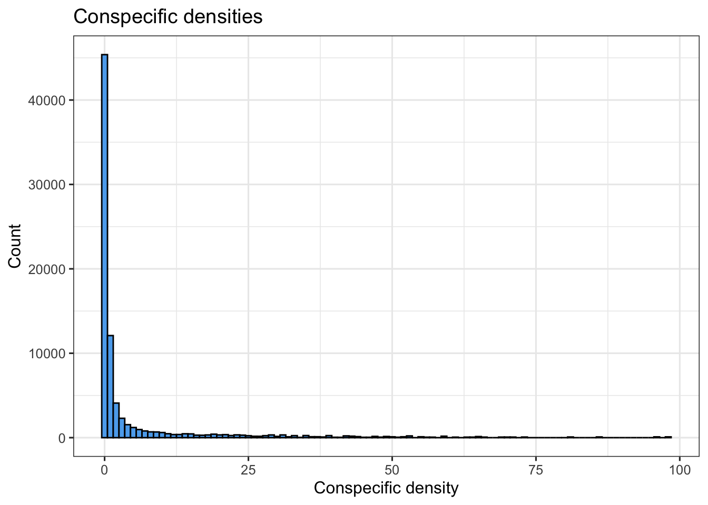
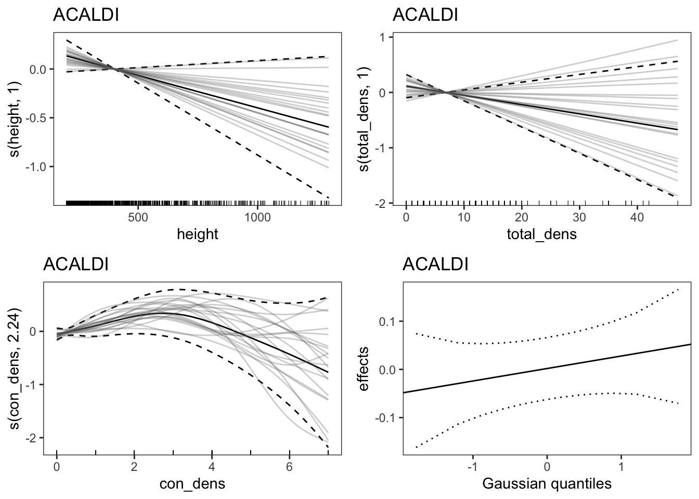
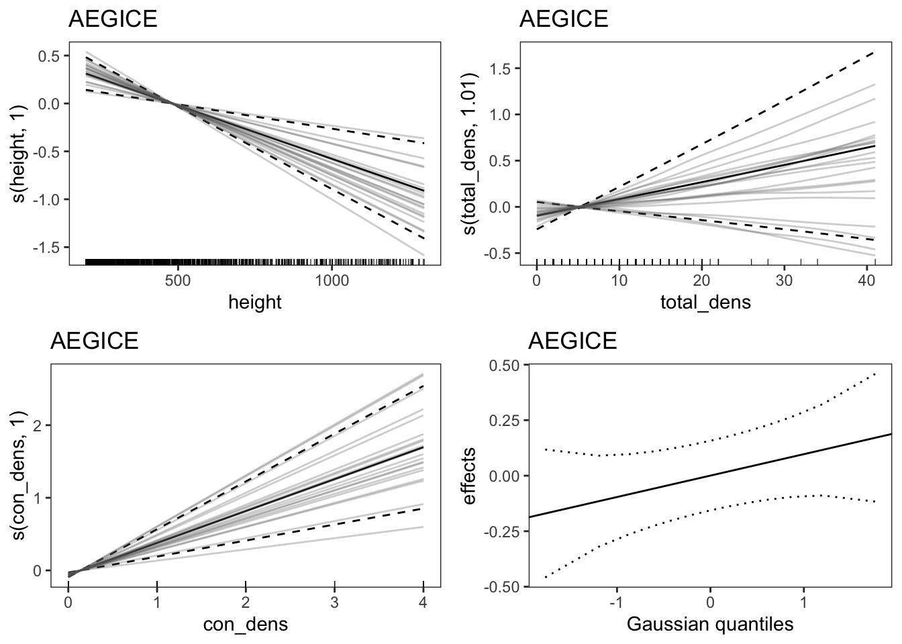

In this section, we examine a subset of the Barro Colorado Island (BCI) 50-ha plot seedling data to illustrate the impact of conspecific density on mortality probability. We calculate the Average Marginal Effect (more about marginal effects in general here) as our metric of the strength conspecific density dependence. We then estimate both the absolute Average Marginal Effect (AME) and the relative Average Marginal Effect (rAME). The AME represents the average absolute change in mortality probability due to a specified increase in conspecific density. In contrast, the rAME is the relative change in mortality probability compared to a baseline value.
The standard approach for modeling plant CDD patterns presumes a linear relationship between performance (e.g., mortality/survival) and conspecific neighborhood density metrics. However, in this section, we use ‘Generalized Additive Models (GAMs)’ as it offer flexibility for non-linear relationships between performance and predictors.
Our demonstration utilizes a subset of the Barro Colorado Island (BCI) 50-ha forest dynamics plot seedling data, encompassing only 30 species. Seedlings are censused in 1x1 m plots, distributed at 5-m intervals throughout the 50-ha plot. In this example, neighbor densities are calculated using the number of conspecific and heterospecific seedling neighbors within the same 1x1m plot as the focal individual. Please note that this analysis is solely for demonstration purposes; hence, no biological conclusions should be drawn from the results due to the limited data subset used.
The code below assumes the data is in a format where each row is an observation for an individual from a census. For this particular data set, the column descriptions are as follows:
Id: unique identifier for each seedling
plot: location
spp: species
date: date of observation
year: year of observation
census: census number
status: status at census, 0 = alive, 1 = dead
height.last.census: height.last.census
con_dens: number of conspecific neighbors within each seedling plot
total_dens: number of total neighbors
het_dens: number of heterospecifics neighbors
time.since.last.census: time interval between censuses
# make sure variables are taken as factordata_BCI$census <-factor(data_BCI$census)data_BCI$spp <-factor(data_BCI$spp)data_BCI$plot <-factor(data_BCI$plot)data_BCI$height=data_BCI$height.last.censusdata_BCI$interval=as.numeric(data_BCI$time.since.last.census)
Let’s take a quick look at the data set we’ll be working with:
Code
# Exploring data # visualize ggplot(data_BCI, aes(x = con_dens)) +geom_histogram(binwidth =1, color ="black", fill ="steelblue2") +labs(x ="Conspecific density", y ="Count", title ="Conspecific densities") +theme_bw(12)

3.4 Handling “data deficient” species
We categorize a species as data deficient if it has fewer than four unique conspecific density values. At the end of this section of the code, a data frame named ‘nsp’ will be generated. This data frame will classify each species as either “data deficient” or “not data deficient”.
From our data set 9 species out of 30 were assigned as data deficient. Here, we used the thresholds of 4 unique values of conspecific densities and a minimum range of 1 for conspecific as our thresholds for what constitutes a data deficient species.
Code
nval =4## this is the number of 'unique' conspecific values minrange =1# minimum range for conspecific densitydata_BCI %>%group_by(spp) %>%summarise(range_con_dens =max(con_dens) -min(con_dens),max_con_dens =max(con_dens),unique_con_dens =length(unique(con_dens)),unique_total_dens =length(unique(total_dens)),unique_height =length(unique(height.last.census)) ) %>%# check if conspecific less than defined nvalmutate(issue_nval = unique_con_dens < nval,# range should at least be equal to minrangeissue_range = range_con_dens < minrange, trymodel =!(issue_nval|issue_range),# Assignment of "data deficient" speciesdata_deficient =!trymodel ) -> nsp # Store the resulting dataframe in the object 'nsp'# Visualize the top rows of the table 'nsp' in a formatted mannernsp %>%head() %>%kable() %>%kable_styling(latex_options =c("striped", "scale_down"))
spp
range_con_dens
max_con_dens
unique_con_dens
unique_total_dens
unique_height
issue_nval
issue_range
trymodel
data_deficient
ACALDI
7
7
8
35
379
FALSE
FALSE
TRUE
FALSE
AEGICE
4
4
5
28
499
FALSE
FALSE
TRUE
FALSE
BEILPE
98
98
69
72
894
FALSE
FALSE
TRUE
FALSE
CAPPFR
5
5
6
52
767
FALSE
FALSE
TRUE
FALSE
CECRIN
7
7
7
20
177
FALSE
FALSE
TRUE
FALSE
CORDLA
4
4
5
32
457
FALSE
FALSE
TRUE
FALSE
3.5 Function for fitting models
In the context of the Janzen-Connell Hypothesis, we focus on the differences between CDD and HDD (‘Stabilizing effect’), where conspecific neighbors’ negative effects surpass those from heterospecifics, leading to population stabilization (Broekman et al. 2019). This effect is vital for estimating species’ self-limitation.
In this section we illustrate the conspecific density impact, using a model with conspecific density and total density. By using total density in the model instead of heterospecific density, the estimated effect (slope) of conspecific density in our analysis corresponds to the result of subtracting HDD from CDD.
We use here a Generalized Additive Model (GAM) with a complementary log-log (cloglog) link function to model the seedling status (‘alive’ or ‘dead’) as a function of conspecific density con_dens, total density total_dens and tree height or size of the focal individual (e.g., height or dbh), the latter serving as a covariate.
The cloglog link accounts for differences in observation time Δ𝑡 through an offset term, applicable to datasets where (0=alive and 1=dead)(Currie 2016).In other words, to use a cloglog link to account for differences in census interval length, you must be modeling mortality, not survival.
Next, we specify the smooth term in the model formula. The k value determines the complexity of the smooth. If k exceeds the number of unique values in a variable, it’s adjusted to be two less than that number. We also monitor model convergence and any warnings that may arise. With this setup, we establish ‘k=2’ as the minimum value since ‘k=1’ results in a linear relationship. Hence, we defined in the previous section a minimum of 4 unique values for conspecific densities as threshold, as setting a threshold of 3 would enforce linearity in the model.
Code
# Define a function to fit a model to the given datamodel_fit =function(data, spinfo, reduced = F) {# create new factor with correct factor levels per species data$census =factor(data$census)# # Determine if there's more than one unique value in 'census' # and construct the relevant term for the model formula term_c =ifelse(length(unique(data$census)) >1, "+ s(census, bs = 're')", "") #term_p = "+ s(plot, bs = 're')"if (reduced) { form =as.formula(paste0("status ~ s(height, k = k1) + s(total_dens, k = k2)" , term_c)) # reduced model #,term_p } else { form =as.formula(paste0("status ~ s(height, k = k1) + s(total_dens, k = k2) + s(con_dens, k = k3)" , term_c)) # full model #, term_p }# Choose penalty# set to default k=10 k1 = k2 = k3 =10if (k1 > spinfo$unique_height) k1 = spinfo$unique_height -2if (k2 > spinfo$unique_total_dens) k2 = spinfo$unique_total_dens -2if (k3 > spinfo$unique_con_dens) k3 = spinfo$unique_con_dens -2# k = 1 would force linearity for that term, and we aim to consider # also potential non-linear relationships, so conspecific k is k=2 # minimum.# Fit the Generalized Additive Model (GAM) mod =try(gam(form , family =binomial(link=cloglog) , offset =log(interval) , data = data , method ="REML" ) , silent = T )# Return the fitted modelreturn(mod)}# check model run# Define a function to check the convergence of the modelmodel_convergence =function(model) {# gam not availableif (!any(class(model)=="gam")) {print(paste(spp, "gam failed")) } else {# gam not convergedif (!model$converged) {print(paste(spp, "no convergence")) } else {# Explore warning "glm.fit: fitted probabilities numerically 0 or 1 # occurred (complete separation)" eps <-10* .Machine$double.eps glm0.resids <-augment(x = model) %>%mutate(p =1/ (1+exp(-.fitted)),warning = p >1-eps,influence =order(.hat, decreasing = T)) infl_limit =round(nrow(glm0.resids)/10, 0)# Check if any of the warnings correspond to the 10% most # influential observations. If not, then it is okay. num =any(glm0.resids$warning & glm0.resids$influence < infl_limit)# If there's complete separationif (num) {print(paste(spp, "complete separation is likely")) } else {# Check if the Vc component of the model is missingif (is.null(model$Vc)) {print(paste(spp, "Vc not available")) } else {# If everything is fine, return the modelreturn(model) } } } }}
3.6 Fit models
Here we fit the model for all species. data deficient species are treated as one group since there is not sufficient data to be treated independently. In this dataset, we have 9 species that are flagged as ‘data deficient’,
Code
# Check the distribution of species marked as 'data deficient' # (T or F) # and determine the number of species for which we will try the model # We have 9 species that are flagged as 'data deficient'table(data_deficient = nsp$data_deficient, trymodel = nsp$trymodel)
# Convert spp to characterdata_BCI$spp <-as.character(data_BCI$spp)# Extract species that are flagged as 'data deficient' from the nsp # dataframedata_deficient_species <- nsp$spp[nsp$data_deficient ==TRUE]# Replace species names with "data_deficient_seedling" for those # flagged as 'data_deficient'data_BCI2 <- data_BCI %>%mutate(spp =ifelse(spp %in% data_deficient_species, "data_deficient_seedling", spp))# # Summarize attributes for each species in the modified dataframe # (including the new #"data_deficient_seedling" group)data_BCI2 %>%group_by(spp) %>%summarise(range_con_dens =max(con_dens, na.rm =TRUE) -min(con_dens, na.rm =TRUE),max_con_dens =max(con_dens, na.rm =TRUE),unique_con_dens =length(unique(con_dens)),unique_total_dens =length(unique(total_dens)),unique_height =length(unique(height.last.census)) ) %>%mutate(# less than nval unique values in consp densitiesissue_nval = unique_con_dens < nval, # range should at least be equal to minrangeissue_range = range_con_dens < minrange, trymodel =!(issue_nval | issue_range),# preliminary assignment of data_deficient speciesdata_deficient =!trymodel ) -> nsp_data_deficient###### Fit model for each species#### Create lists to store results of the main and reduced model fits# List for main model fitsres_mod =list() # List for reduced model fits (for calculating Pseudo R2)res_red_mod =list() # Loop through species in the nsp_data_deficient dataframe for which # we will try modeling # (Here, the group of data_deficient species is treated as a single # species)for(spp in nsp_data_deficient$spp[nsp_data_deficient$trymodel]) {# select data for individual species dat_sp = data_BCI2[data_BCI2$spp == spp, ]# Fit the main and reduced models for the current species mod =model_fit(data = dat_sp, spinfo = nsp_data_deficient[nsp_data_deficient$spp == spp, ]) mod_red =model_fit(data = dat_sp, spinfo = nsp_data_deficient[nsp_data_deficient$spp == spp, ], reduced = T)# Check the convergence of both models res =model_convergence(model = mod) res_red =model_convergence(model = mod_red)# save resultif (is.character(res)) { nsp$data_deficient[nsp$spp == spp] = T } else { res_mod[[spp]] = res res_red_mod[[spp]] = res_red }}
# For each model result in 'res_mod', extract summary statistics # (like log-likelihood, AIC, BIC #, etc.) using the 'glance' function# from the 'broom' package# df logLik AIC BIC deviance df.residuals nobs sums =lapply(res_mod, broom::glance)sums =Map(cbind, sums, sp =names(sums))sums =do.call(rbind, sums)head(sums)
# plot splines in pdf ----------------------------------------------# # Specify the name of the PDF file where the plots will be savedpdf_file <-"mortality.pdf"# Open the PDF file for writingpdf(pdf_file)# Loop through all the model results stored in 'res_mod'for (i in1:length(res_mod)) {# Get the vizmod for the current species vizmod <-getViz(res_mod[[i]], post = T, unconditional = T) pl <-plot(vizmod, nsim =20, allTerms = T) +# Add confidence interval line/ fit line/ simulation linel_ciLine() +l_fitLine() +l_simLine() +#Add confidence interval bar/# Add fitted pointsl_ciBar() +l_fitPoints(size =1) +l_rug() +# Add rug plot# Add title with the name of the current specieslabs(title =names(res_mod)[i]) # Print the plot to the R console only for the first 2 speciesif (i <=2) {print(pl, pages =1) }# Save the plot to the PDFprint(pl, pages =1)}# Close the PDF filedev.off()
quartz_off_screen
2
Hit <Return> to see next plot:

Hit <Return> to see next plot:

Hit <Return> to see next plot:
Hit <Return> to see next plot:
Hit <Return> to see next plot:
Hit <Return> to see next plot:
Hit <Return> to see next plot:
Hit <Return> to see next plot:
3.9 AMEs Absolute and Relative
In this section we illustrate the calculation of the average marginal effects, including both the absolute Average Marginal Effect (AME) and the relative Average Marginal Effect (rAME).
Here, AMEs are computed by determining the marginal effect (essentially the partial derivative or slope) of a predictor for a unit change change in conspecific density at each observed value, and then averaging these effects. This method yields a single, interpretable measure that offers an averaged estimate of the predictor’s impact. It’s worth noting that the AME, compared to traditional effect sizes, provides a clearer measure of a predictor’s influence by quantifying the average change in the outcome for each unit change in the predictor rather than the raw coefficient (effect size) that may be influenced by the scale of the variable or confounded by interactions with other predictors. In the analyses illustrated here, we are interested in calculating the average marginal effect of conspecific density on mortality.
Furthermore, rAMEs enhance the level of interpretability by delivering a normalized measure of these averaged effects. They represent the percentage change in the response variable due to a unit change in the predictor relative to the base mortality, providing an intuitive, relative grasp of the predictor’s influence. This normalization process allows for the comparison of effects across different species, each with its own base level of mortality.
To calculate AMEs and rAMEs we need the file “res_model” that includes all the models results.
There is also alternative approaches for calculating average marginal effects using ‘marginaleffects’ package that we encourage the user to explore.
3.9.1 Settings for AMEs
Here we provide three scenarios for calculating AMEs or rAMEs through the change argument.
Equilibrium: This scenario computes AMEs or rAMEs for a unit increase in conspecific density of above observed values, providing insight into the marginal effect of density increase in an existing ecosystem. Invasion: This scenario models the effects of introducing species into a new community in which it did not previously occur, transitioning the conspecific density from zero to a specified unit, helping understand the impact of sudden species introductions linking to theoretical considerations from coexistence theory (Chesson 2000). IQR: This scenario evaluates AMEs or rAMEs within the middle 50% range of conspecific density, offering a perspective less influenced by extremes, hence providing a more robust understanding of effects within typical density ranges.
Code
#### chose predictors for local density -setting AMEs# Define a vector of predictors with their corresponding namespredictors <-c(con_dens ="con_dens", total_dens ="total_dens")# change in conspecific density for AME calculations----# One more neighbor seedling # or for adult trees: pi*((dbh_neighbor/1000)/2)^2 *#dec_fun(decay_con,dist_neighbor, decay_type) additive=1# different change settings for con-specific densitiesinterval =1# Specify how the conspecific density should be changed for # different scenarios: # 'equilibrium', 'invasion', and 'iqr' (interquartile range)change =list(equilibrium =data.frame(con_dens ="paste('+', additive)") , invasion =data.frame(con_dens ="c(0, additive)") , iqr =data.frame(con_dens ="c(q1, q3)") )## Set the number of iterations for any subsequent calculations or # simulationsiter =500
3.9.2 Functions to calculate AMEs and rAME
This section will write and define two functions. The setstep fucntion and get_AME fucntion. Get_AME is a function to calculate the Average Marginal Effects for a given term in a model. The function first creates two copies of the data, d0 and d1, and adjusts the term of interest based on the change argument (one of the three scenarios described in the previous section). It then calculates the predictions for the two data sets and computes the marginal effects.
Code
# Define a function to set the step size for numerical derivatives# This function determines an appropriate step size using machine's # precision/machine epsilon to strike a balance between accuracy and # rounding errors.setstep =function(x) { eps = .Machine$double.epsreturn(x + (max(abs(x), 1, na.rm =TRUE) *sqrt(eps)) - x)}# Function to compute Average and relative Marginal Effects # (AME and rAME) for a given model--------------------get_AME =function(mod, data, term , change =NULL , at =NULL , offset =1 , relative = F , iterations =1000 , seed =10 , samples = F) {# Prepare two dataframes for different scenarios in marginal # effect computation d0 = d1 = data# Adjust the 'term' in the data based on the 'change' parameterif (is.null(change)) {# If change is NULL, adjust the term for numerical derivative # computation d0[[term]] = d0[[term]] -setstep(d0[[term]]) d1[[term]] = d1[[term]] +setstep(d1[[term]]) } # If change has an additive component, adjust the term accordinglyif (grepl("\\+", paste(change, collapse ="_"))) { d1[[term]] = d1[[term]] +as.numeric(gsub("\\+", "", change)) } # If change is explicit with two values, set the term values # directlyif (length(change) ==2) { d0[[term]] =as.numeric(change[1]) d1[[term]] =as.numeric(change[2]) }# If 'at' is specified, set predictor values in the data to these # fixed values# (allows the function to calculate the marginal effects at the # specified values)if (!is.null(at)) {for (i innames(at)) d0[[i]] = at[[i]] d1[[i]] = at[[i]] }# Create matrices for prediction based on the model Xp0 <-predict(mod, newdata = d0, type="lpmatrix") Xp1 <-predict(mod, newdata = d1, type="lpmatrix")# Extract model parameters ilink <-family(mod)$linkinv beta <-coef(mod) vc <- mod$Vc # covariance matrix # Compute marginal effects based on the adjusted data pred0 <-1- (1-ilink(Xp0 %*% beta))^offset pred1 <-1- (1-ilink(Xp1 %*% beta))^offset ME <- (pred1-pred0)# Adjust for numerical derivative if change is NULLif (is.null(change)) { ME <- ME/(d1[[term]] - d0[[term]]) } # convert to relative if requestedif (relative == T) ME = ME/pred0# average marginal effect AME =mean(ME)# Simulate AMEs to compute uncertainty in the estimates# Compute the variance of the average marginal effect through a # "posterior" simulation.# This involves simulating from a multivariate normal distribution # using the model's #coefficient means and covariance matrixif (!is.null(seed)) set.seed(seed) coefmat =mvrnorm(n = iterations , mu = beta , Sigma = vc)# For each simulated coefficient vector, estimate the Average # Marginal Effect (AME). AMEs =apply(coefmat, 1, function(coefrow) {# Calculate marginal effects based on the simulated coefficient pred0 <-1- (1-ilink(Xp0 %*% coefrow))^offset pred1 <-1- (1-ilink(Xp1 %*% coefrow))^offset ME <- (pred1-pred0)# if change is NULL, use numerical derivativeif (is.null(change)) { ME <- ME/(d1[[term]] - d0[[term]]) } # convert to relative if requestedif (relative == T) ME = ME/pred0# average marginal effect AME =mean(ME)return(AME) })# Combine results# If the 'samples' flag is FALSE, return the summary results.# Otherwise, return both the summary and the sample results.if (!samples) { res =data.frame(term , estimate = AME , std.error =sqrt(var(AMEs)) , estimate.sim =mean(AMEs) , offset , change.value =paste(change, collapse ="_"))return(res) } else { res_sums =data.frame(term , estimate = AME , std.error =sqrt(var(AMEs)) , offset , change.value =paste(change, collapse ="_")) res_samples =data.frame(term , estimate = AMEs , MLE = AME , offset , change.value =paste(change, collapse ="_")) res =list(res_sums, res_samples)return(res) }}
3.9.3 Calculating Absolute Average Marginal Effect (AMEs)
At the end of this code segment, the AME data frame contains average marginal estimates for each predictor, each corresponding to different change scenarios. In essence, AME provides the average effect that a predictor has on the outcome across these scenarios. On the other hand, the AMEsamples data frame contains multiple samples of AME for each predictor, each aligned with a specific type of change scenario, which allows for an evaluation of the uncertainty inherent in the AME estimates.
Code
# Absolute AMEs ---------------------------------------------------# Initialize empty data frames to store the resultsAME =data.frame()AMEsamples =data.frame()# Loop through predictor names that match "con_"for (i innames(predictors)[grepl("con_", names(predictors))]) { # Loop through different change settings (e.g., equilibrium, invasion,# iqr)for (j innames(change)) {# Calculate the AME for each model in res_mod temp =lapply(res_mod, function(x){# If the change is based on IQR (interquartile range), calculate the# 1st and 3rd quartilesif (j =="iqr") { q1 =quantile(x$model$con_dens, probs =0.25) q3 =quantile(x$model$con_dens, probs =0.75) }# Use the get_AME function to calculate the AME for the current modelget_AME(x , data = x$model , offset = interval , term = i , change =eval(parse(text = change[[j]][,i])) , iterations = iter , samples = T ) } )# AME tempAME =lapply(temp, function(x) x[[1]]) tempAME =Map(cbind, tempAME, change = j, sp =names(tempAME)) tempAME =do.call(rbind, tempAME) AME =rbind(AME, tempAME)# AME samples tempSamples =lapply(temp, function(x) x[[2]]) tempSamples =Map(cbind, tempSamples, change = j, sp =names(tempSamples), iter = iter) tempSamples =do.call(rbind, tempSamples) AMEsamples =rbind(AMEsamples, tempSamples) }}head(AME)
3.9.4 Calculating Relative Average Marginal Effect (rAMEs)
At the end of this code segment, the rAME data frame contains therAME estimates for the predictor and each type of change, and the rAMEsamples data frame contains the rAME samples for each predictor and type of change.
Code
# Relative rAMEs -----------------------------------------------------------# Initialize empty data frames to store the resultsrAME =data.frame()rAMEsamples =data.frame()# Loop through predictor names that match "con_" for (i innames(predictors)[grepl("con_", names(predictors))]) { # Loop through different change settings # (e.g., equilibrium, invasion, iqr)for (j innames(change)) {# Calculate the relative AME (rAME) for each model in res_mod temp =lapply(res_mod, function(x){# If the change is based on IQR (interquartile range), # calculate the 1st and 3rd quartilesif (j =="iqr") { q1 =quantile(x$model$con_dens, probs =0.25) q3 =quantile(x$model$con_dens, probs =0.75) }# Use the get_AME function to calculate the rAME for the # current model, setting the 'relative' argument to TRUEget_AME(x , data = x$model , offset = interval , term = i , change =eval(parse(text = change[[j]][, i])) , iterations = iter , relative = T , samples = T ) } )# rAME tempAME =lapply(temp, function(x) x[[1]]) tempAME =Map(cbind, tempAME, change = j, sp =names(tempAME)) tempAME =do.call(rbind, tempAME) rAME =rbind(rAME, tempAME)# rAME samples tempSamples =lapply(temp, function(x) x[[2]]) tempSamples =Map(cbind, tempSamples, change = j, sp =names(tempSamples), iter = iter) tempSamples =do.call(rbind, tempSamples) rAMEsamples =rbind(rAMEsamples, tempSamples) }}head(rAME)
Broekman, Maarten JE, Helene C Muller-Landau, Marco D Visser, Eelke Jongejans, SJ Wright, and Hans de Kroon. 2019. “Signs of Stabilisation and Stable Coexistence.”Ecology Letters 22 (11): 1957–75.
Chesson, Peter. 2000. “Mechanisms of Maintenance of Species Diversity.”Annual Review of Ecology and Systematics 31 (1): 343–66.
Currie, Iain D. 2016. “On Fitting Generalized Linear and Non-Linear Models of Mortality.”Scandinavian Actuarial Journal 2016 (4): 356–83.
Source Code
---output: html_documentprefer-html: trueeditor_options: chunk_output_type: consoleexecute: cache: true---# Calculating Marginal Effects## OverviewIn this section, we examine a *subset* of the Barro Colorado Island (BCI) 50-ha plot seedling [data](https://datadryad.org/stash/dataset/doi:10.5061/dryad.05qfttf85) to illustrate the impact of conspecific density on mortality probability. We calculate the Average Marginal Effect ([more about marginal effects in general here](https://marginaleffects.com/)) as our metric of the strength conspecific density dependence. We then estimate both the absolute Average Marginal Effect (AME) and the relative Average Marginal Effect (rAME). The **AME** represents the average absolute change in mortality probability due to a specified increase in conspecific density. In contrast, the **rAME** is the relative change in mortality probability compared to a baseline value.The standard approach for modeling plant CDD patterns presumes a linear relationship between performance (e.g., mortality/survival) and conspecific neighborhood density metrics. However, in this section, we use ['Generalized Additive Models (GAMs)'](https://multithreaded.stitchfix.com/blog/2015/07/30/gam/) as it offer flexibility for non-linear relationships between performance and predictors.::: callout-noteNote: The code is adapted from the [latitudinalCNDD repository](https://github.com/LisaHuelsmann/latitudinalCNDD/tree/main/code) by [Lisa Hüelsmann](https://demographicecology.com/).:::## Load libraries```{r, message=FALSE}# Load librarieslibrary(boot)library(broom)library(dplyr)library(ggplot2)library(gratia)library(here)library(kableExtra) library(knitr) library(lubridate)library(mgcViz)library(mgcv)library(MASS)library(parallel)library(pbapply)library(readr)library(skimr)library(spatstat.geom)library(tidyr)```## Load dataOur demonstration utilizes a subset of the Barro Colorado Island (BCI) 50-ha forest dynamics plot seedling data, encompassing only 30 species. Seedlings are censused in 1x1 m plots, distributed at 5-m intervals throughout the 50-ha plot. In this example, neighbor densities are calculated using the number of conspecific and heterospecific seedling neighbors within the same 1x1m plot as the focal individual. Please note that this analysis is *solely for demonstration purposes*; hence, no biological conclusions should be drawn from the results due to the limited data subset used.The code below assumes the data is in a format where each row is an observation for an individual from a census. For this particular data set, the column descriptions are as follows:- **Id**: unique identifier for each seedling- **plot**: location- **spp**: species- **date:** date of observation- **year:** year of observation- **census**: census number- **status:** status at census, 0 = alive, 1 = dead- **height.last.census**: height.last.census- **con_dens:** number of conspecific neighbors within each seedling plot- **total_dens:** number of total neighbors- **het_dens:** number of heterospecifics neighbors- **time.since.last.census**: time interval between censuses```{r, message=FALSE}data_BCI <-read_csv("./data/BCI_seedling_data_30_spp_2023.csv")colnames(data_BCI)# make sure variables are taken as factordata_BCI$census <-factor(data_BCI$census)data_BCI$spp <-factor(data_BCI$spp)data_BCI$plot <-factor(data_BCI$plot)data_BCI$height=data_BCI$height.last.censusdata_BCI$interval=as.numeric(data_BCI$time.since.last.census)```Let's take a quick look at the data set we'll be working with:```{r}# Exploring data # visualize ggplot(data_BCI, aes(x = con_dens)) +geom_histogram(binwidth =1, color ="black", fill ="steelblue2") +labs(x ="Conspecific density", y ="Count", title ="Conspecific densities") +theme_bw(12)```## Handling "data deficient" speciesWe categorize a species as *data deficient* if it has fewer than four unique conspecific density values. At the end of this section of the code, a data frame named **'nsp'** will be generated. This data frame will classify each species as either "data deficient" or "not data deficient".From our data set 9 species out of 30 were assigned as *data deficient*. Here, we used the thresholds of 4 unique values of conspecific densities and a minimum range of 1 for conspecific as our thresholds for what constitutes a data deficient species.```{r, message=FALSE, warning=FALSE}nval =4## this is the number of 'unique' conspecific values minrange =1# minimum range for conspecific densitydata_BCI %>%group_by(spp) %>%summarise(range_con_dens =max(con_dens) -min(con_dens),max_con_dens =max(con_dens),unique_con_dens =length(unique(con_dens)),unique_total_dens =length(unique(total_dens)),unique_height =length(unique(height.last.census)) ) %>%# check if conspecific less than defined nvalmutate(issue_nval = unique_con_dens < nval,# range should at least be equal to minrangeissue_range = range_con_dens < minrange, trymodel =!(issue_nval|issue_range),# Assignment of "data deficient" speciesdata_deficient =!trymodel ) -> nsp # Store the resulting dataframe in the object 'nsp'# Visualize the top rows of the table 'nsp' in a formatted mannernsp %>%head() %>%kable() %>%kable_styling(latex_options =c("striped", "scale_down"))```## Function for fitting modelsIn the context of the Janzen-Connell Hypothesis, we focus on the differences between CDD and HDD ('Stabilizing effect'), where conspecific neighbors' negative effects surpass those from heterospecifics, leading to population stabilization [@broekman2019signs]. This effect is vital for estimating species' self-limitation.In this section we illustrate the conspecific density impact, using a model with conspecific density and total density. By using total density in the model instead of heterospecific density, the estimated effect (slope) of conspecific density in our analysis corresponds to the result of subtracting HDD from CDD.We use here a Generalized Additive Model (GAM) with a complementary log-log (cloglog) link function to model the seedling status ('alive' or 'dead') as a function of conspecific density **con_dens**, total density **total_dens** and tree height or size of the focal individual (e.g., height or dbh), the latter serving as a covariate.The cloglog link accounts for differences in observation time Δ𝑡 through an offset term, applicable to datasets where (0=alive and 1=dead)[@currie2016fitting].In other words, to use a cloglog link to account for differences in census interval length, you must be modeling mortality, not survival.Next, we specify the smooth term in the model formula. The k value determines the complexity of the smooth. If k exceeds the number of unique values in a variable, it's adjusted to be two less than that number. We also monitor model convergence and any warnings that may arise. With this setup, we establish 'k=2' as the minimum value since 'k=1' results in a linear relationship. Hence, we defined in the previous section a minimum of 4 unique values for conspecific densities as threshold, as setting a threshold of 3 would enforce linearity in the model.```{r, message=FALSE, warning=FALSE}# Define a function to fit a model to the given datamodel_fit =function(data, spinfo, reduced = F) {# create new factor with correct factor levels per species data$census =factor(data$census)# # Determine if there's more than one unique value in 'census' # and construct the relevant term for the model formula term_c =ifelse(length(unique(data$census)) >1, "+ s(census, bs = 're')", "") #term_p = "+ s(plot, bs = 're')"if (reduced) { form =as.formula(paste0("status ~ s(height, k = k1) + s(total_dens, k = k2)" , term_c)) # reduced model #,term_p } else { form =as.formula(paste0("status ~ s(height, k = k1) + s(total_dens, k = k2) + s(con_dens, k = k3)" , term_c)) # full model #, term_p }# Choose penalty# set to default k=10 k1 = k2 = k3 =10if (k1 > spinfo$unique_height) k1 = spinfo$unique_height -2if (k2 > spinfo$unique_total_dens) k2 = spinfo$unique_total_dens -2if (k3 > spinfo$unique_con_dens) k3 = spinfo$unique_con_dens -2# k = 1 would force linearity for that term, and we aim to consider # also potential non-linear relationships, so conspecific k is k=2 # minimum.# Fit the Generalized Additive Model (GAM) mod =try(gam(form , family =binomial(link=cloglog) , offset =log(interval) , data = data , method ="REML" ) , silent = T )# Return the fitted modelreturn(mod)}# check model run# Define a function to check the convergence of the modelmodel_convergence =function(model) {# gam not availableif (!any(class(model)=="gam")) {print(paste(spp, "gam failed")) } else {# gam not convergedif (!model$converged) {print(paste(spp, "no convergence")) } else {# Explore warning "glm.fit: fitted probabilities numerically 0 or 1 # occurred (complete separation)" eps <-10* .Machine$double.eps glm0.resids <-augment(x = model) %>%mutate(p =1/ (1+exp(-.fitted)),warning = p >1-eps,influence =order(.hat, decreasing = T)) infl_limit =round(nrow(glm0.resids)/10, 0)# Check if any of the warnings correspond to the 10% most # influential observations. If not, then it is okay. num =any(glm0.resids$warning & glm0.resids$influence < infl_limit)# If there's complete separationif (num) {print(paste(spp, "complete separation is likely")) } else {# Check if the Vc component of the model is missingif (is.null(model$Vc)) {print(paste(spp, "Vc not available")) } else {# If everything is fine, return the modelreturn(model) } } } }}```## Fit modelsHere we fit the model for all species. *data deficient* species are treated as one group since there is not sufficient data to be treated independently. In this dataset, we have 9 species that are flagged as 'data deficient',```{r, message=FALSE, warning=FALSE}# Check the distribution of species marked as 'data deficient' # (T or F) # and determine the number of species for which we will try the model # We have 9 species that are flagged as 'data deficient'table(data_deficient = nsp$data_deficient, trymodel = nsp$trymodel) # Convert spp to characterdata_BCI$spp <-as.character(data_BCI$spp)# Extract species that are flagged as 'data deficient' from the nsp # dataframedata_deficient_species <- nsp$spp[nsp$data_deficient ==TRUE]# Replace species names with "data_deficient_seedling" for those # flagged as 'data_deficient'data_BCI2 <- data_BCI %>%mutate(spp =ifelse(spp %in% data_deficient_species, "data_deficient_seedling", spp))# # Summarize attributes for each species in the modified dataframe # (including the new #"data_deficient_seedling" group)data_BCI2 %>%group_by(spp) %>%summarise(range_con_dens =max(con_dens, na.rm =TRUE) -min(con_dens, na.rm =TRUE),max_con_dens =max(con_dens, na.rm =TRUE),unique_con_dens =length(unique(con_dens)),unique_total_dens =length(unique(total_dens)),unique_height =length(unique(height.last.census)) ) %>%mutate(# less than nval unique values in consp densitiesissue_nval = unique_con_dens < nval, # range should at least be equal to minrangeissue_range = range_con_dens < minrange, trymodel =!(issue_nval | issue_range),# preliminary assignment of data_deficient speciesdata_deficient =!trymodel ) -> nsp_data_deficient###### Fit model for each species#### Create lists to store results of the main and reduced model fits# List for main model fitsres_mod =list() # List for reduced model fits (for calculating Pseudo R2)res_red_mod =list() # Loop through species in the nsp_data_deficient dataframe for which # we will try modeling # (Here, the group of data_deficient species is treated as a single # species)for(spp in nsp_data_deficient$spp[nsp_data_deficient$trymodel]) {# select data for individual species dat_sp = data_BCI2[data_BCI2$spp == spp, ]# Fit the main and reduced models for the current species mod =model_fit(data = dat_sp, spinfo = nsp_data_deficient[nsp_data_deficient$spp == spp, ]) mod_red =model_fit(data = dat_sp, spinfo = nsp_data_deficient[nsp_data_deficient$spp == spp, ], reduced = T)# Check the convergence of both models res =model_convergence(model = mod) res_red =model_convergence(model = mod_red)# save resultif (is.character(res)) { nsp$data_deficient[nsp$spp == spp] = T } else { res_mod[[spp]] = res res_red_mod[[spp]] = res_red }}```## Summarize model fitsRegression table via broom::tidy()```{r}coefs =lapply(res_mod, broom::tidy)coefs =Map(cbind, coefs, sp =names(coefs))coefs =do.call(rbind, coefs)```Model summary via broom::glance()```{r}# For each model result in 'res_mod', extract summary statistics # (like log-likelihood, AIC, BIC #, etc.) using the 'glance' function# from the 'broom' package# df logLik AIC BIC deviance df.residuals nobs sums =lapply(res_mod, broom::glance)sums =Map(cbind, sums, sp =names(sums))sums =do.call(rbind, sums)head(sums)# AUCaucs =lapply(res_mod, function(x) { roc <- performance::performance_roc(x, new_data = x$model) bayestestR::area_under_curve(roc$Spec, roc$Sens)})sums$AUC =unlist(aucs)# Pseudo R2sums$pseudoR2 =1- (unlist(lapply(res_mod, function(x) x$deviance)) /unlist(lapply(res_red_mod, function(x) x$deviance)))```## Plotting results```{r}# plot splines in pdf ----------------------------------------------# # Specify the name of the PDF file where the plots will be savedpdf_file <-"mortality.pdf"# Open the PDF file for writingpdf(pdf_file)# Loop through all the model results stored in 'res_mod'for (i in1:length(res_mod)) {# Get the vizmod for the current species vizmod <-getViz(res_mod[[i]], post = T, unconditional = T) pl <-plot(vizmod, nsim =20, allTerms = T) +# Add confidence interval line/ fit line/ simulation linel_ciLine() +l_fitLine() +l_simLine() +#Add confidence interval bar/# Add fitted pointsl_ciBar() +l_fitPoints(size =1) +l_rug() +# Add rug plot# Add title with the name of the current specieslabs(title =names(res_mod)[i]) # Print the plot to the R console only for the first 2 speciesif (i <=2) {print(pl, pages =1) }# Save the plot to the PDFprint(pl, pages =1)}# Close the PDF filedev.off()``````{R, echo=FALSE}# Set up a plotting area with 2 rows and 2 columnspar(mfrow =c(2, 2))# Loop through the first two model results in 'res_mod'for (i in1:2) {# Get the vizmod for the current species vizmod <-getViz(res_mod[[i]], post = T, unconditional = T) pl <-plot(vizmod, nsim =20, allTerms = T) +# Add confidence interval line/ fit line/ simulation linel_ciLine() +l_fitLine() +l_simLine() +# Add confidence interval bar/# Add fitted pointsl_ciBar() +l_fitPoints(size =1) +l_rug() +# Add rug plot# Add title with the name of the current specieslabs(title =names(res_mod)[i]) # Plot on the current panelprint(pl)}# Reset the plotting parameters to defaultpar(mfrow =c(1, 1))```## AMEs Absolute and RelativeIn this section we illustrate the calculation of the average marginal effects, including both the absolute Average Marginal Effect (AME) and the relative Average Marginal Effect (rAME).Here, **AMEs** are computed by determining the marginal effect (essentially the partial derivative or slope) of a predictor for a unit change change in conspecific density at each observed value, and then averaging these effects. This method yields a single, interpretable measure that offers an averaged estimate of the predictor's impact. It's worth noting that the AME, compared to traditional effect sizes, provides a clearer measure of a predictor's influence by quantifying the average change in the outcome for each unit change in the predictor rather than the raw coefficient (effect size) that may be influenced by the scale of the variable or confounded by interactions with other predictors. In the analyses illustrated here, we are interested in calculating the average marginal effect of conspecific density on mortality.Furthermore, **rAMEs** enhance the level of interpretability by delivering a normalized measure of these averaged effects. They represent the percentage change in the response variable due to a unit change in the predictor relative to the base mortality, providing an intuitive, relative grasp of the predictor's influence. This normalization process allows for the comparison of effects across different species, each with its own base level of mortality.To calculate **AMEs** and **rAMEs** we need the file "res_model" that includes all the models results.There is also alternative approaches for calculating average marginal effects using ['marginaleffects' package](https://marginaleffects.com/articles/slopes.html) that we encourage the user to explore.### Settings for AMEsHere we provide three scenarios for calculating **AMEs** or **rAMEs** through the **`change`** argument.**Equilibrium**: This scenario computes **AMEs** or **rAMEs** for a unit increase in conspecific density of above observed values, providing insight into the marginal effect of density increase in an existing ecosystem. **Invasion**: This scenario models the effects of introducing species into a new community in which it did not previously occur, transitioning the conspecific density from zero to a specified unit, helping understand the impact of sudden species introductions linking to theoretical considerations from coexistence theory [@chesson2000mechanisms]. **IQR**: This scenario evaluates **AMEs** or **rAMEs** within the middle 50% range of conspecific density, offering a perspective less influenced by extremes, hence providing a more robust understanding of effects within typical density ranges.```{r}#### chose predictors for local density -setting AMEs# Define a vector of predictors with their corresponding namespredictors <-c(con_dens ="con_dens", total_dens ="total_dens")# change in conspecific density for AME calculations----# One more neighbor seedling # or for adult trees: pi*((dbh_neighbor/1000)/2)^2 *#dec_fun(decay_con,dist_neighbor, decay_type) additive=1# different change settings for con-specific densitiesinterval =1# Specify how the conspecific density should be changed for # different scenarios: # 'equilibrium', 'invasion', and 'iqr' (interquartile range)change =list(equilibrium =data.frame(con_dens ="paste('+', additive)") , invasion =data.frame(con_dens ="c(0, additive)") , iqr =data.frame(con_dens ="c(q1, q3)") )## Set the number of iterations for any subsequent calculations or # simulationsiter =500```### Functions to calculate AMEs and rAMEThis section will write and define two functions. The setstep fucntion and get_AME fucntion. Get_AME is a function to calculate the Average Marginal Effects for a given term in a model. The function first creates two copies of the data, **`d0`** and **`d1`**, and adjusts the term of interest based on the **`change`** argument (one of the three scenarios described in the previous section). It then calculates the predictions for the two data sets and computes the marginal effects.```{r}# Define a function to set the step size for numerical derivatives# This function determines an appropriate step size using machine's # precision/machine epsilon to strike a balance between accuracy and # rounding errors.setstep =function(x) { eps = .Machine$double.epsreturn(x + (max(abs(x), 1, na.rm =TRUE) *sqrt(eps)) - x)}# Function to compute Average and relative Marginal Effects # (AME and rAME) for a given model--------------------get_AME =function(mod, data, term , change =NULL , at =NULL , offset =1 , relative = F , iterations =1000 , seed =10 , samples = F) {# Prepare two dataframes for different scenarios in marginal # effect computation d0 = d1 = data# Adjust the 'term' in the data based on the 'change' parameterif (is.null(change)) {# If change is NULL, adjust the term for numerical derivative # computation d0[[term]] = d0[[term]] -setstep(d0[[term]]) d1[[term]] = d1[[term]] +setstep(d1[[term]]) } # If change has an additive component, adjust the term accordinglyif (grepl("\\+", paste(change, collapse ="_"))) { d1[[term]] = d1[[term]] +as.numeric(gsub("\\+", "", change)) } # If change is explicit with two values, set the term values # directlyif (length(change) ==2) { d0[[term]] =as.numeric(change[1]) d1[[term]] =as.numeric(change[2]) }# If 'at' is specified, set predictor values in the data to these # fixed values# (allows the function to calculate the marginal effects at the # specified values)if (!is.null(at)) {for (i innames(at)) d0[[i]] = at[[i]] d1[[i]] = at[[i]] }# Create matrices for prediction based on the model Xp0 <-predict(mod, newdata = d0, type="lpmatrix") Xp1 <-predict(mod, newdata = d1, type="lpmatrix")# Extract model parameters ilink <-family(mod)$linkinv beta <-coef(mod) vc <- mod$Vc # covariance matrix # Compute marginal effects based on the adjusted data pred0 <-1- (1-ilink(Xp0 %*% beta))^offset pred1 <-1- (1-ilink(Xp1 %*% beta))^offset ME <- (pred1-pred0)# Adjust for numerical derivative if change is NULLif (is.null(change)) { ME <- ME/(d1[[term]] - d0[[term]]) } # convert to relative if requestedif (relative == T) ME = ME/pred0# average marginal effect AME =mean(ME)# Simulate AMEs to compute uncertainty in the estimates# Compute the variance of the average marginal effect through a # "posterior" simulation.# This involves simulating from a multivariate normal distribution # using the model's #coefficient means and covariance matrixif (!is.null(seed)) set.seed(seed) coefmat =mvrnorm(n = iterations , mu = beta , Sigma = vc)# For each simulated coefficient vector, estimate the Average # Marginal Effect (AME). AMEs =apply(coefmat, 1, function(coefrow) {# Calculate marginal effects based on the simulated coefficient pred0 <-1- (1-ilink(Xp0 %*% coefrow))^offset pred1 <-1- (1-ilink(Xp1 %*% coefrow))^offset ME <- (pred1-pred0)# if change is NULL, use numerical derivativeif (is.null(change)) { ME <- ME/(d1[[term]] - d0[[term]]) } # convert to relative if requestedif (relative == T) ME = ME/pred0# average marginal effect AME =mean(ME)return(AME) })# Combine results# If the 'samples' flag is FALSE, return the summary results.# Otherwise, return both the summary and the sample results.if (!samples) { res =data.frame(term , estimate = AME , std.error =sqrt(var(AMEs)) , estimate.sim =mean(AMEs) , offset , change.value =paste(change, collapse ="_"))return(res) } else { res_sums =data.frame(term , estimate = AME , std.error =sqrt(var(AMEs)) , offset , change.value =paste(change, collapse ="_")) res_samples =data.frame(term , estimate = AMEs , MLE = AME , offset , change.value =paste(change, collapse ="_")) res =list(res_sums, res_samples)return(res) }}```### Calculating Absolute Average Marginal Effect (AMEs)At the end of this code segment, the **AME** data frame contains average marginal estimates for each predictor, each corresponding to different change scenarios. In essence, AME provides the average effect that a predictor has on the outcome across these scenarios. On the other hand, the **AMEsamples** data frame contains multiple samples of AME for each predictor, each aligned with a specific type of change scenario, which allows for an evaluation of the uncertainty inherent in the AME estimates.```{r}# Absolute AMEs ---------------------------------------------------# Initialize empty data frames to store the resultsAME =data.frame()AMEsamples =data.frame()# Loop through predictor names that match "con_"for (i innames(predictors)[grepl("con_", names(predictors))]) { # Loop through different change settings (e.g., equilibrium, invasion,# iqr)for (j innames(change)) {# Calculate the AME for each model in res_mod temp =lapply(res_mod, function(x){# If the change is based on IQR (interquartile range), calculate the# 1st and 3rd quartilesif (j =="iqr") { q1 =quantile(x$model$con_dens, probs =0.25) q3 =quantile(x$model$con_dens, probs =0.75) }# Use the get_AME function to calculate the AME for the current modelget_AME(x , data = x$model , offset = interval , term = i , change =eval(parse(text = change[[j]][,i])) , iterations = iter , samples = T ) } )# AME tempAME =lapply(temp, function(x) x[[1]]) tempAME =Map(cbind, tempAME, change = j, sp =names(tempAME)) tempAME =do.call(rbind, tempAME) AME =rbind(AME, tempAME)# AME samples tempSamples =lapply(temp, function(x) x[[2]]) tempSamples =Map(cbind, tempSamples, change = j, sp =names(tempSamples), iter = iter) tempSamples =do.call(rbind, tempSamples) AMEsamples =rbind(AMEsamples, tempSamples) }}head(AME)```### Calculating Relative Average Marginal Effect (rAMEs)At the end of this code segment, the **`rAME`** data frame contains the**`rAME`** estimates for the predictor and each type of change, and the **`rAMEsamples`** data frame contains the **`rAME`** samples for each predictor and type of change.```{r}# Relative rAMEs -----------------------------------------------------------# Initialize empty data frames to store the resultsrAME =data.frame()rAMEsamples =data.frame()# Loop through predictor names that match "con_" for (i innames(predictors)[grepl("con_", names(predictors))]) { # Loop through different change settings # (e.g., equilibrium, invasion, iqr)for (j innames(change)) {# Calculate the relative AME (rAME) for each model in res_mod temp =lapply(res_mod, function(x){# If the change is based on IQR (interquartile range), # calculate the 1st and 3rd quartilesif (j =="iqr") { q1 =quantile(x$model$con_dens, probs =0.25) q3 =quantile(x$model$con_dens, probs =0.75) }# Use the get_AME function to calculate the rAME for the # current model, setting the 'relative' argument to TRUEget_AME(x , data = x$model , offset = interval , term = i , change =eval(parse(text = change[[j]][, i])) , iterations = iter , relative = T , samples = T ) } )# rAME tempAME =lapply(temp, function(x) x[[1]]) tempAME =Map(cbind, tempAME, change = j, sp =names(tempAME)) tempAME =do.call(rbind, tempAME) rAME =rbind(rAME, tempAME)# rAME samples tempSamples =lapply(temp, function(x) x[[2]]) tempSamples =Map(cbind, tempSamples, change = j, sp =names(tempSamples), iter = iter) tempSamples =do.call(rbind, tempSamples) rAMEsamples =rbind(rAMEsamples, tempSamples) }}head(rAME)```## Saving results```{r}# Save results ---------------------------------------------------save(list =c("AME", "AMEsamples", "rAME", "rAMEsamples", "nsp", "coefs", "sums") # "nsp_data_deficient" , file =paste0( "./data/mortality.Rdata"))write.csv(AME, "./data/AME.csv")write.csv(rAME, "./data/rAME.csv")```